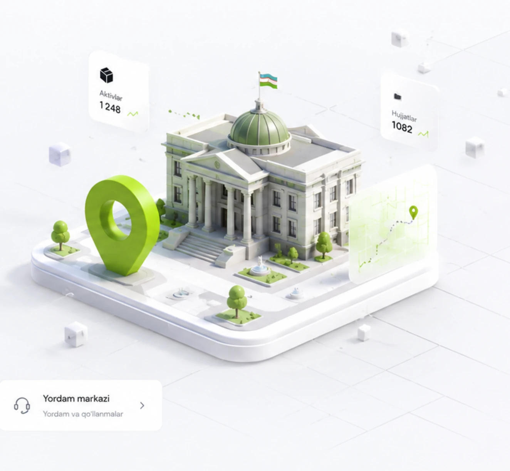

Boshqaruv paneliga qaytish
404
Sahifa topilmadi
Kechirasiz, siz izlagan sahifa mavjud emas yoki ko'chirilgan bo'lishi mumkin. Bosh sahifaga qaytib, davom eting.

Kechirasiz, siz izlagan sahifa mavjud emas yoki ko'chirilgan bo'lishi mumkin. Bosh sahifaga qaytib, davom eting.
